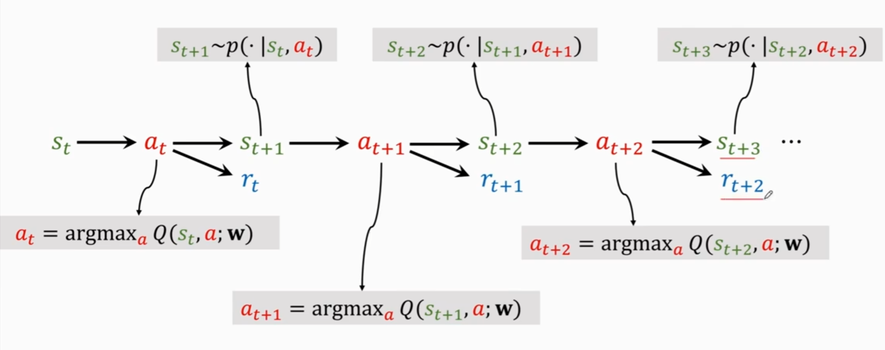
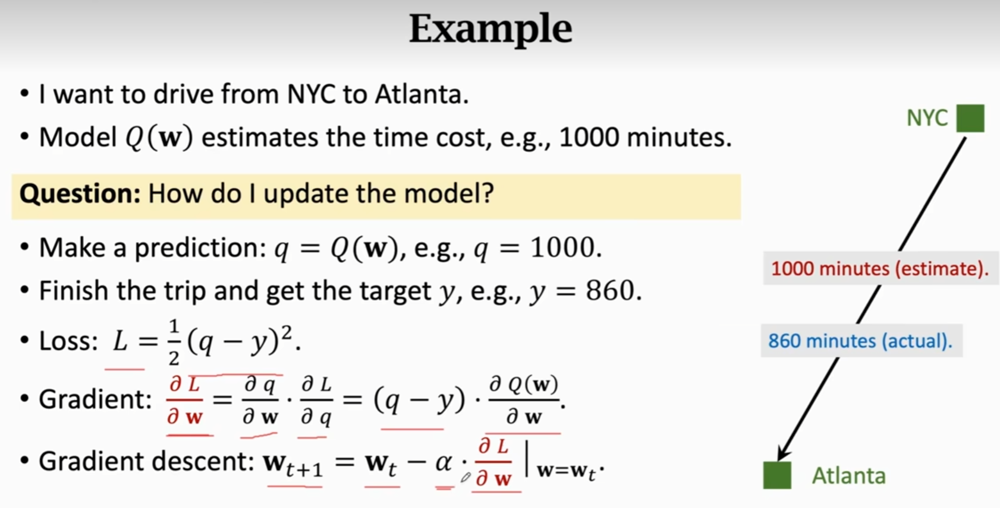

-
强化学习两个随机性来源
- 动作根据给定的环境，计算下一步每种动作的概率，而随机生成
- 下一时间的环境状态根据当前的环境状态和动作而随机生成
-
三元组（s1,a1,r1………st,at,rt）(state，action，reward)
-
折扣汇报，未来的奖励没现在的奖励值钱
Gt=Rt+γRt+1+…
为什么回报与未来的奖励有关，与过去的奖励无关？
过去的因为是已经改变不了的了，不是个变量了，而强化学习做的是在当前状态下该采取什么动作，做了当前的动作是为了未来更好才去做的
-
动作价值函数（Action-value function）Qπ(st,at)=E[Gt∣St=st,At=at]，因为没办法直接求Gt，所以只能通过概率去求其期望，转化为状态价值函数（与policy π有关 ）,这个函数是用来评价当前的动作好不好，这里的期望是根据未来的所有可能的状态At+1,At+2...和动作(St+1,St+2,...)求的
-
optimal Action-value function:Q∗(st,at)=πmaxQπ(st,at)，作用为评价当前的动作,找一个最好的policy π，使得当前的动作最好
-
State-value function:Vπ(st)=EA[Qπ(st,A)]，可以判断当前局势好不好，因为是对所有动作求期望，所以是对当前局势的评价
Vπ(st)=EA[Qπ(st,A)]={Σa[Qπ(st,a)π(a∣st)]∫a[Qπ(st,a)π(a∣st)]daif discreteif continuous
Es[Vπ(S)]也可以评价当前 policyπ 的好坏，因为是对所有状态求期望，所以是对整个policy的评价
-
agent学习方式：根据当前的观察状态 st
- 策略学习(policy π(a∣s))
- 价值学习(optimal value function Q∗(s,a))
-
学习过程

-
贝尔曼方程及其推导
- 状态值函数的贝尔曼方程
Vπ(s)=Ea∼π(s)[R(s,a)+γEs′∼P(s′∣s,a)[Vπ(s′)]]
- 状态值函数的贝尔曼方程是一个递归方程，它表示了一个状态的值与其后继状态的值之间的关系。
- 推导过程：
Vπ(s)=Eπ[Gt∣St=s]=Eπ[Rt+1+γGt+1∣St=s]=Eπ[Rt+1+γVπ(St+1)∣St=s]=Eπ[R(s,A)+γVπ(S′)∣S=s]=Ea∼π(s)[R(s,a)+γEs′∼P(s′∣s,a)[Vπ(s′)]]
- 动作值函数的贝尔曼期望方程
Qπ(s,a)=R(s,a)+γEs′∼P(s′∣s,a)[Ea′∼π(s′)[Qπ(s′,a′)]]
- 动作值函数的贝尔曼方程是一个递归方程，它表示了一个状态动作对的值与其后继状态动作对的值之间的关系。
- 推导过程：
Qπ(s,a)=Eπ[Gt∣St=s,At=a]=Eπ[Rt+1+γGt+1∣St=s,At=a]=Eπ[Rt+1+γQπ(St+1,At+1)∣St=s,At=a]=Eπ[R(s,a)+γQπ(S′,A′)∣S=s,A=a]=R(s,a)+γEs′∼P(s′∣s,a)[Ea′∼π(s′)[Qπ(s′,a′)]]
- 状态值函数的贝尔曼最优方程
V∗(s)=amax[R(s,a)+γEs′∼P(s′∣s,a)[V∗(s′)]]
- 状态值函数的贝尔曼最优方程是一个递归方程，它表示了一个状态的值与其后继状态的值之间的关系。
- 推导过程：
V∗(s)=maxa[Q∗(s,a)]=maxa[R(s,a)+γEs′∼P(s′∣s,a)[V∗(s′)]]
- 动作值函数的贝尔曼最优方程
Q∗(s,a)=R(s,a)+γEs′∼P(s′∣s,a)[a′maxQ∗(s′,a′)]
- 动作值函数的贝尔曼最优方程是一个递归方程，它表示了一个状态动作对的值与其后继状态动作对的值之间的关系。
- 推导过程：
Q∗(s,a)=Eπ∗[Gt∣St=s,At=a]=Eπ∗[Rt+1+γGt+1∣St=s,At=a]=Eπ∗[Rt+1+γmaxa′Q∗(St+1,a′)∣St=s,At=a]=Eπ∗[R(s,a)+γmaxa′Q∗(S′,a′)∣S=s,A=a]=R(s,a)+γEs′∼P(s′∣s,a)[maxa′Q∗(s′,a′)]
-
DQN（Deep Q-Network）(离散型)
用深度学习来近似Q函数
目标：最大化奖励函数
问题1：如何通过已知的Q∗(s,a)来寻找最好动作
答：a∗=aargmaxQ∗(s,a)
挑战：Q∗(s,a)是未知的，只能通过已知的数据来近似
答：用神经网络Q(s,a;w)来近似Q∗(s,a)（DNQ）
训练过程：

-
Temporal Difference(TD) Learning
最简单的例子

Q: Can I update the model before the end of the episode?
A: 前半段实际值，后半段预测值，加起来作为一个值去与模型的整体估计值作比较
-
apply TD to DQN
因为
Gt=Rt+γGt+1
所以
yt=Q(st,at;w)≈rt+γQ(st+1,at+1;w)=rt+γmaxa′Q(st+1,a′;w)(at+1的选择原理)Loss:Lt=21(yt−Q(st,at;w))2
所以
E[Gt](Prediction)≈E[rt(Reality)+γE[Gt+1](Prediction)]（TD target）
-
Policy Network π(a∣s,θ)
近似状态价值函数
V(st,θ)=Σaπ(a∣st,θ)Qπ(st,a)
问题1：如何学习参数θ？
答：学习θ，使得J(θ)=Es[V(S;θ)]最大化
策略梯度算法(随机梯度，随机性来源于s)
1. 观察当前状态s
2. 更新参数θ←θ+β⋅∂θ∂V(s;θ)
问题2：如何求∂θ∂V(s;θ)？(此处并不严谨)
答：∂θ∂V(s;θ)=Σa∂θ∂π(a∣s;θ)Qπ(s,a)(离散形式)=Σaπ(a∣s;θ)∂θ∂logπ(a∣s;θ)Qπ(s,a)(chain rule:∂θ∂log[π(θ)]=π(θ)1∂θ∂π(θ))=Ea[∂θ∂logπ(a∣s;θ)Qπ(s,a)]（连续形式）
问题3： 如何在连续的情况下求得Ea[∂θ∂logπ(a∣s;θ)Qπ(s,a)]?
答：蒙特卡洛近似，用采样的方法来估计期望
1. 采样动作a^，根据π(a^∣s;θ)
2. 计算g(a^,θ)=∂θ∂logπ(a^∣s;θ)Qπ(s,a^)
3. 可以证明g(a^,θ)为∂θ∂V(s,θ)的无偏估计
问题4： 如何近似计算qt
答：两种方法：
1. REINFORCE
2. Actor-Critic
用神经网络近似价值函数Qπ